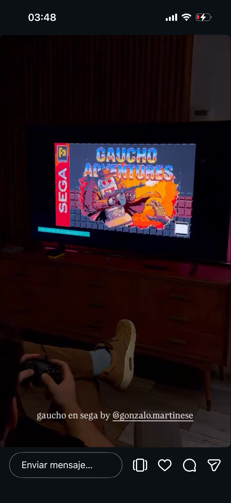

Protagonista · Mega Drive
Gaucho Adventures
Me hicieron protagonista de un juego de Mega Drive. Quedó jugable en la Retropie de la oficina.
Modo historiaViñeta jugable · Omnibot 1984
Dale, soy Gaucho y ando buscando laburo. Si hay que pasar de nivel, avisame dónde queda el enchufe.
Contratar a Gaucho
Protagonista · Mega Drive
Me hicieron protagonista de un juego de Mega Drive. Quedó jugable en la Retropie de la oficina.
Modo historiaArchivo Black · Chivo · Press Start 2P
#000320#F4E2C4#523823#F3462E#F28409#EAA540#74ACDF